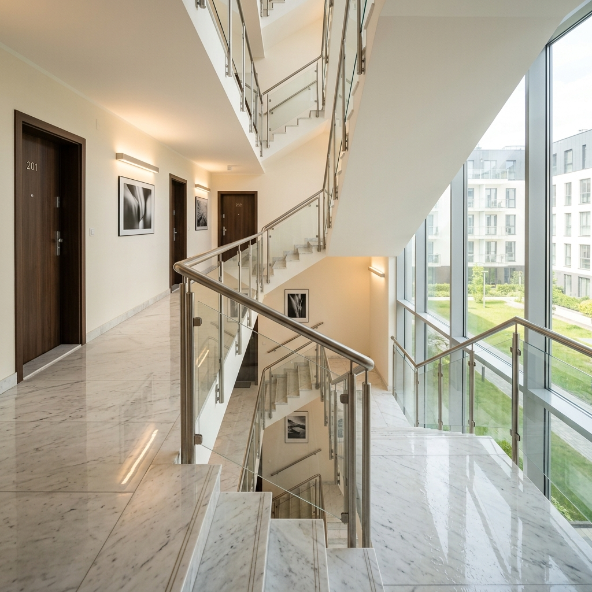
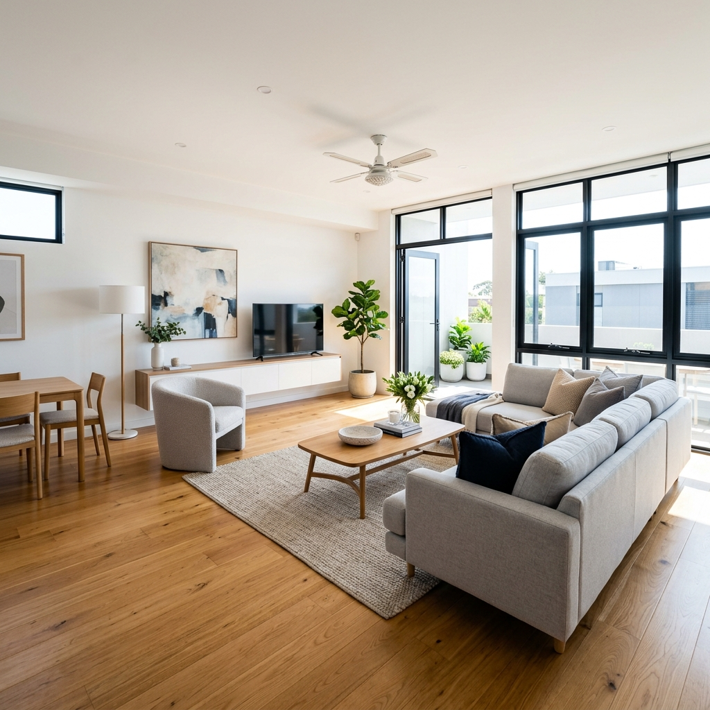
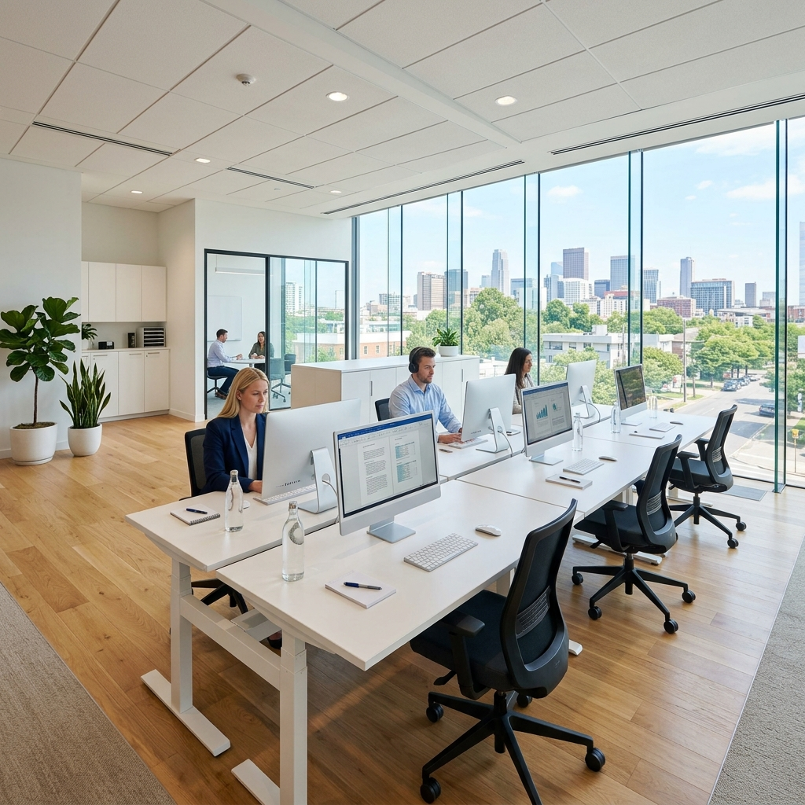
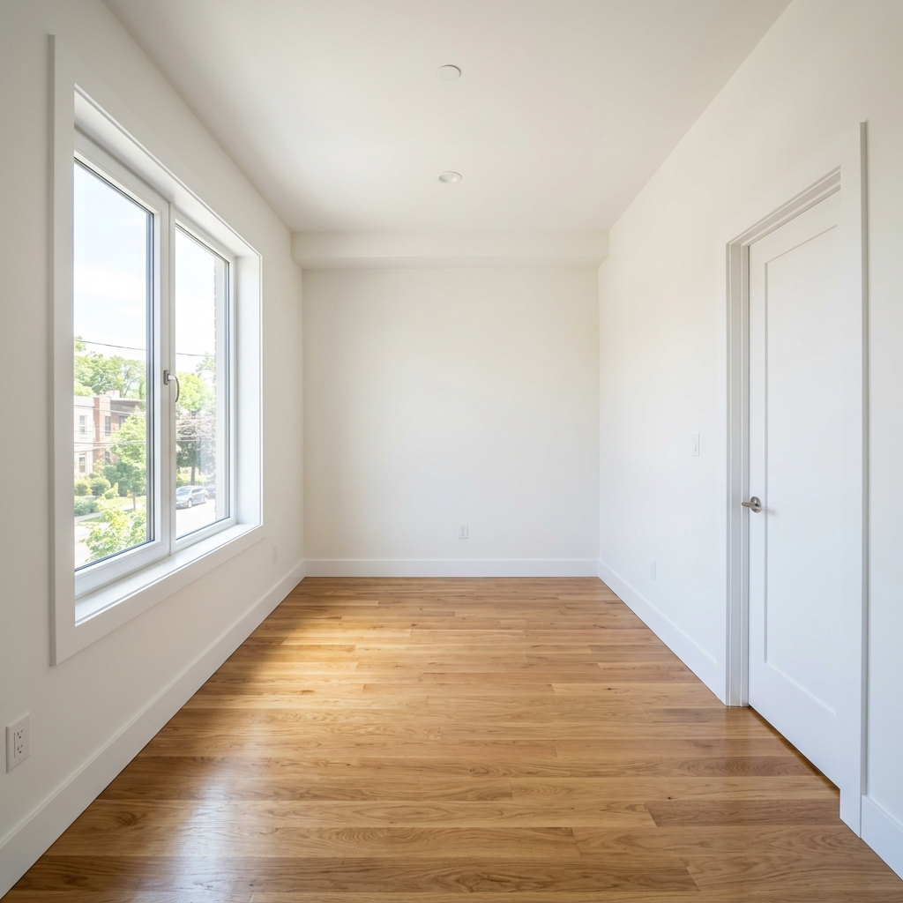

Her alanda profesyonel ve güvenilir temizlik çözümleri
Sitelerinizin genel temizliği, bahçe bakımı ve ortak alan yönetiminde profesyonel destek sunuyoruz. Çöp alımı, otopark temizliği ve peyzaj düzenlemesi gibi hizmetlerle yaşam alanınızın değerini artırıyoruz.

Apartman ve sitelerin ortak kullanım alanı olan merdivenlerin temizliği sağlığınız için önemlidir. Korkuluklar, asansör içleri, kapılar ve zeminler düzenli olarak özel kimyasallarla temizlenir.

Günlük yaşantınızın yoğunluğunda evinizin temizliğiyle yorulmayın. Deneyimli ekibimizle evinizde detaylı ve derinlemesine temizlik hizmeti sunuyoruz. Salon, mutfak, banyo ve yatak odalarınızda özenli bir hijyen sağlıyoruz.

Çalışanlarınızın sağlığı ve motivasyonu için temiz bir çalışma ortamı şarttır. Periyodik ofis temizliği hizmetimizle masalar, zeminler ve ortak alanlarda maksimum hijyen garantisi veriyoruz.

Yeni bir eve taşınmadan veya tadilat sonrası oluşan zorlu inşaat kalıntıları, harç, boya ve tozları profesyonel ekipmanlarımızla sıfır hata ile temizliyoruz. Mekanınızı anında yaşanabilir hale getiriyoruz.